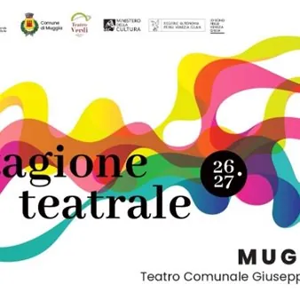

da sab 24 ott a dom 7 mar
Nuova stagione - Teatro Verdi di Muggia
Ecco la nuova stagione teatrale del Verdi di Muggia! 24 ottobre 2026 ore 17:30 - 1976/2026 LA FORZA DEI LEGAMI - proiezione del documentario A cinquant’anni dal terremoto del Friuli, 1976/2026 La forza dei legami ripercorre una delle pagine più significative della storia recente…
 Indicazioni
Indicazioni
- Costi e prenotazioni
- Costo non indicato · Prenotazione non indicata
- Programma
- Programma da verificare. Apri la fonte ufficiale per orari e possibili aggiornamenti.
- In caso di maltempo
- Nessuna indicazione specifica pubblicata.
- Note
- Acquisito automaticamente dalla fonte.
L’EVENTO
Descrizione completa
Ecco la nuova stagione teatrale del Verdi di Muggia!
24 ottobre 2026 ore 17:30 - 1976/2026 LA FORZA DEI LEGAMI - proiezione del documentario
A cinquant’anni dal terremoto del Friuli, 1976/2026 La forza dei legami ripercorre una delle pagine più significative della storia recente del territorio, interrogandosi su come una tragedia collettiva abbia saputo trasformarsi in un’occasione di rinascita culturale.
Ingresso libero
15 novembre 2026 ore 17:30 - WIN FOR LIFE
Suona il campanello. Apri la porta. Uno sconosciuto ti offre ottomila euro al giorno, per sempre. Una proposta apparentemente irresistibile che nasconde una sola domanda: cosa sei disposto a fare, o a perdere, per accettarla? Da questo spunto prende avvio Win for Life , il nuovo musical originale degli Oblivion, una commedia musicale costruita attorno a una storia ricca di equivoci, colpi di scena e personaggi surreali.
20 dicembre 2026 ore 17:30 - NUOVA BARBERIA CARLONI
Nelle sparute barberie di provincia oggi rimangono specchi rettangolari appannati dal tempo, vecchie sedie cigolanti, arnesi arrugginiti, odore di brillantina e impazienti avventori in silenziosa attesa del proprio turno. Ma soltanto mezzo secolo fa la barberia era il luogo di ritrovo preferito dai signori. Un posto discreto, dove discutere liberamente dei propri affari e delle proprie idee. L’idea portante dello spettacolo è ricreare l’atmosfera di quei tempi non troppo lontani in cui il barbiere cantava, suonava, serviva da bere, consigliava… in una parola, intratteneva i suoi ospiti. Nel gioco, il palco non è altro che la barberia medesima, animata dai tre aspiranti barbieri, e la platea una grande sala d’attesa.
17 gennaio 2026 - NEMICI COME PRIMA
Nell’anticamera di un reparto di terapia intensiva, una donna e un uomo attendono con apprensione notizie del padre, potente imprenditore e fondatore di una fortunata catena di macellerie. Mentre tutti si preparano all’inevitabile e iniziano a organizzare ciò che verrà dopo, emerge però un imprevisto: il vecchio patriarca non sembra avere alcuna intenzione di arrendersi. La sua tempra resistente costringe i presenti a una lunga attesa tra accuse reciproche, interessi personali e comiche rivendicazioni, i rapporti familiari si trasformano in un campo di battaglia esilarante dove il dolore lascia spesso spazio all’assurdo.
31 gennaio 2026 - LA FELICITA'
L'opera di Éric Assous è una commedia che prende avvio da una notte di passione per aprire, quasi senza accorgersene, una voragine emotiva. Un incontro apparentemente leggero diventa il detonatore di una resa dei conti con l’altro, ma soprattutto con sé stessi. Lei, con la sua ostinata volontà di trasformare una notte in qualcosa di più, costringe entrambi a togliersi le maschere. Lui, chiamato a rispondere, scopre le crepe di una vita che credeva ordinata.
28 febbraio 2027 ore 17:30 - TERZO TEMPO
Domenico e Costanza, marito e moglie “separati ma vicini”, affrontano con spirito opposto il passaggio alla grande età: lei, impulsiva e visionaria, vuole trasformarlo nel tempo più prezioso della vita; lui, più posato e ironico, cerca di starle dietro, tra slanci vitali e colpi di scena. In un gioco comico e affettuoso di ribaltamenti, i due mettono in discussione convenzioni, ruoli e certezze, sostenuti da un figlio incredulo e una giovane spettatrice partecipe.
7 marzo ore 17:30 - VOLEVO FARE IL MUSICISTA
Riccardo Rossi porta in scena il suo più grande amore: la musica. In un racconto personale e coinvolgente, l’attore e autore ripercorre il modo in cui la musica è entrata nella sua vita e l’ha accompagnato lungo tutto il suo percorso umano e professionale, trasformandosi in una presenza costante e imprescindibile.
I rinnovi degli abbonamenti saranno possibili dal 2 settembre, i nuovi abbonamenti dal 28 settembre, e i singoli biglietti dal 19 ottobre, come di consueto presso La Rambla Viaggi in corso Puccini a Muggia.
IL PROGRAMMA
Programma e orari
Appuntamenti raccolti dalle fonti elencate. Dove manca un orario, non è ancora disponibile in questa scheda.
Programma pubblicato
- Dal 2026-10-24 al 2027-03-07
INFORMAZIONI UTILI
Prima di partire
- Controllare la fonte prima di partire.
ORGANIZZAZIONE